Conceito
O que torna uma ferida "crônica"?
Uma ferida crônica é qualquer lesão cutânea que não cicatriza em 3 a 6 semanas seguindo o processo fisiológico esperado.[2] Em vez de progredir pelas fases normais — hemostasia, inflamação, proliferação e remodelamento — a ferida fica travada, geralmente na fase inflamatória, exposta a infecções, biofilme bacteriano e tecido necrótico.
As causas subjacentes são quase sempre sistêmicas: diabetes, insuficiência venosa ou arterial, imobilidade prolongada, desnutrição ou imunossupressão.[1]
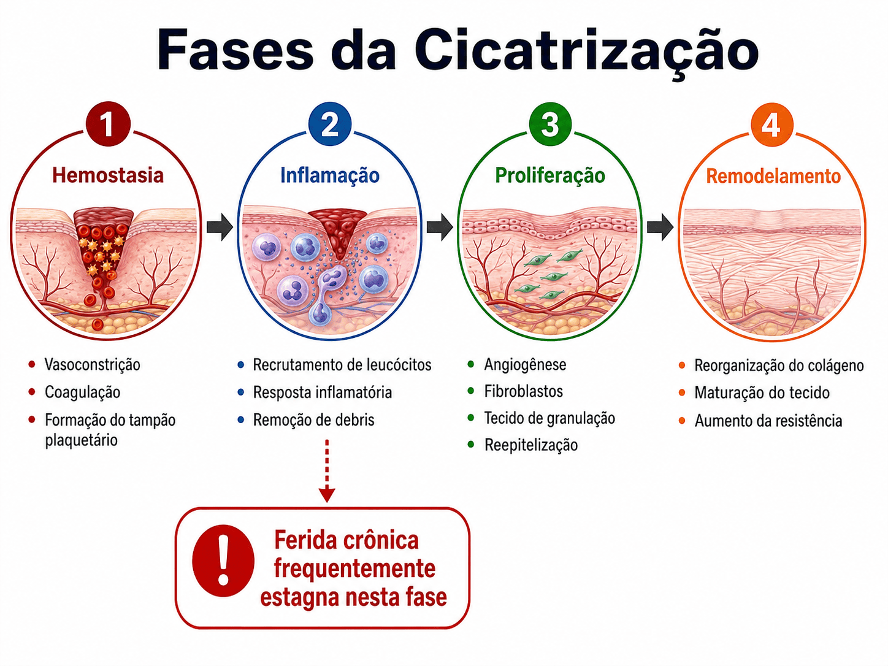
Os quatro grandes tipos
Úlcera do Pé Diabético
Prevalência global estimada em 6,3%.[1] Incidência lifetime de úlcera em diabéticos: 15–20%.[16] A taxa de amputação de membro inferior entre pacientes com úlcera diabética varia amplamente (3–43%), com metanálise estimando 31%.[17]
Úlcera Venosa de Perna
Tipo mais prevalente entre as úlceras crônicas de membros inferiores.[3] Afeta sobretudo mulheres acima de 70 anos. Alta taxa de recidiva.
Lesão por Pressão
Prevalência global estimada em 12,8% dos pacientes hospitalizados (2008–2018).[18] Em UTIs, prevalência entre 16,9% e 23,8% na mesma metanálise. Segunda ferida crônica mais frequente no mundo.
Úlcera Arterial / Mista
Associada à doença arterial periférica e aterosclerose. Alta mortalidade cardiovascular.[2]
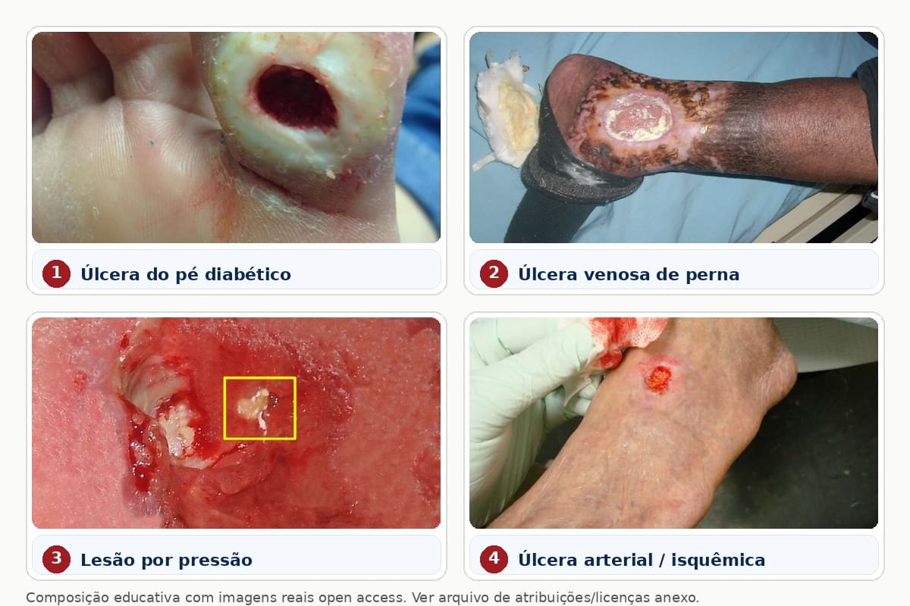
Epidemiologia Global
O peso real: números que o sistema ainda não absorveu
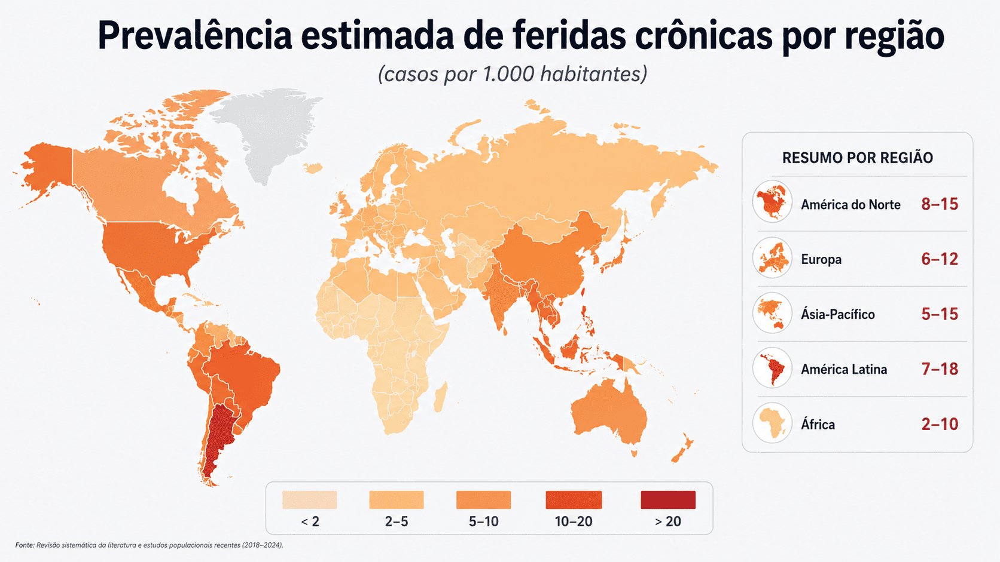
A prevalência global de feridas crônicas é estimada em 1,67 por 1.000 habitantes,[3] mas provavelmente subestimada: países de baixa renda têm vigilância epidemiológica deficiente e muitos casos nunca são registrados.
O envelhecimento e a epidemia de diabetes são os dois motores mais potentes. Com o número de diabéticos devendo dobrar até 2045, a incidência de úlceras do pé diabético seguirá a mesma curva.[2]
Na Bélgica, a prevalência de úlcera do pé diabético chega a 16,6% entre pacientes com DM2 — a maior do mundo entre os 33 países analisados.[1]
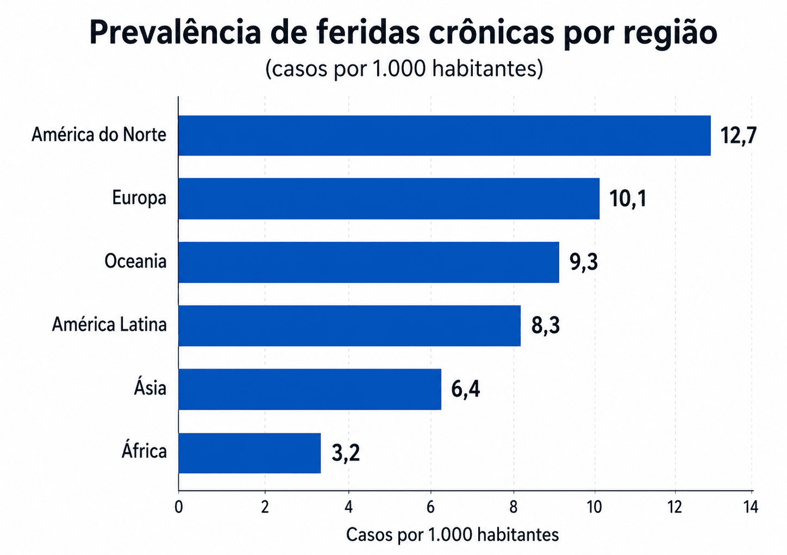
Impacto Econômico
Um custo que cresce mais rápido do que a capacidade de pagar
O mercado global de wound care atingiu US$ 25,8 bilhões em 2025 e deve chegar a US$ 38,4 bilhões até 2034, crescendo 4,5% ao ano — dados de relatórios setoriais.[5]
Quando se somam internações, cirurgias, reabilitação e dias de trabalho perdidos, o custo é muito maior. Nos EUA, feridas crônicas foram estimadas em US$ 6 a US$ 15 bilhões/ano ao Medicare/Medicaid;[7] no Reino Unido, estimativas situam o custo total em torno de US$ 3 bilhões anuais.[7]
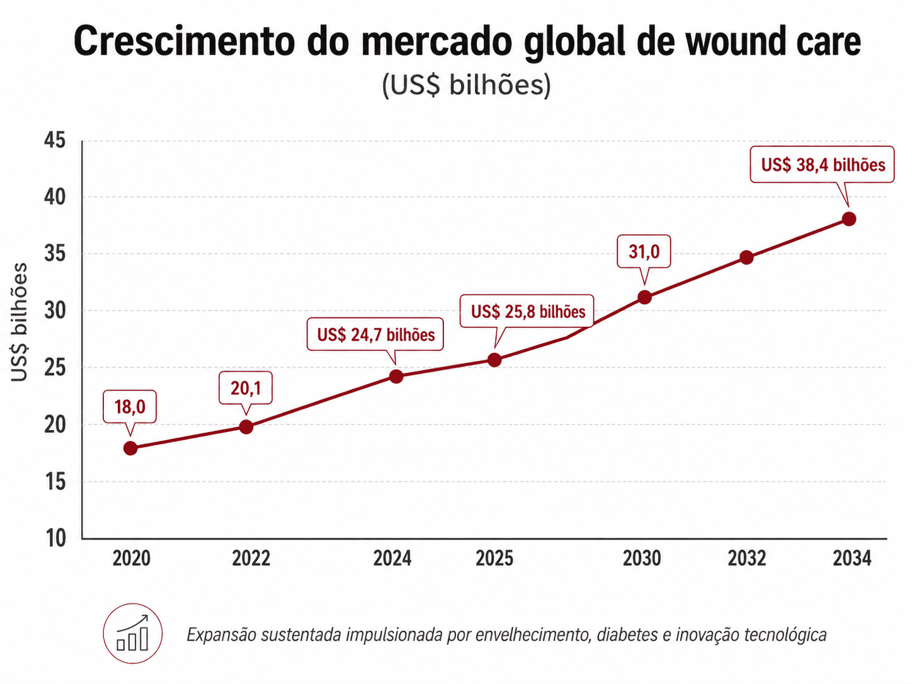
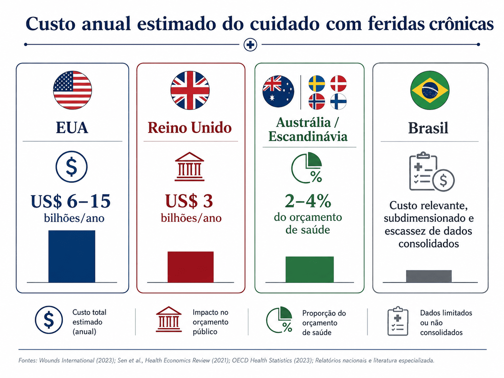
Desafios Globais
Os sete nós que o mundo ainda não desatou
Apesar dos avanços tecnológicos, o campo enfrenta obstáculos estruturais persistentes — científicos, clínicos, políticos e sociais.
🔬 Biofilme Bacteriano
Revisão sistemática e metanálise estimou prevalência de 78,2% de biofilme em feridas crônicas (IC 95%: 61,6–89%) — comunidade bacteriana protegida por matriz extracelular que resiste a antibióticos e bloqueia a cicatrização.[15]
🏥 Fragmentação do Cuidado
Feridas são tratadas em casa, na UBS, no ambulatório e no hospital sem protocolos integrados. A falta de continuidade gera retrabalho, infecções e internações evitáveis.[7]
📊 Ausência de Dados Epidemiológicos
Países de baixa e média renda têm mínima vigilância sobre feridas crônicas. Sem dados, não há política pública; sem política, não há investimento.[2]
👩⚕️ Formação Profissional Insuficiente
Enfermeiros e médicos recebem pouca formação em estomaterapia e wound care. O especialista ainda é raro fora dos grandes centros.[4]
🧬 Resistência Antimicrobiana
O uso excessivo de antibióticos cria cepas resistentes (MRSA, Pseudomonas, VRE). Feridas infectadas tornam-se praticamente intratáveis com arsenais convencionais.[12]
📱 Baixa Adoção de Tecnologia
Telemonitoramento, IA diagnóstica e curativos inteligentes existem — mas chegam devagar aos sistemas públicos, especialmente em países de renda média.[6]
⚖️ Desigualdade de Acesso
Comunidades vulneráveis têm menor acesso a curativos avançados e maior risco de amputação e morte. A ferida crônica é também um marcador de iniquidade social.[1]
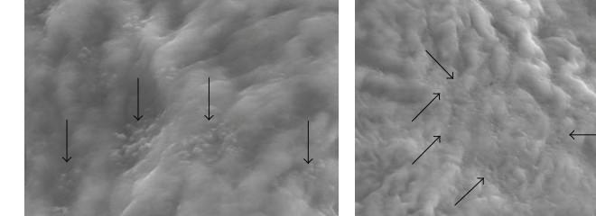
Fronteiras da Ciência
O que a ciência já tem — e o que ainda está chegando
O campo avança em várias frentes simultâneas: biológica, tecnológica, digital e nanotecnológica. O desafio é transformar essas inovações em acesso real para pacientes.
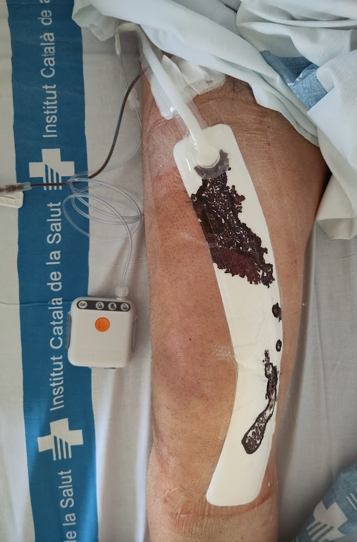
Terapia por Pressão Negativa (NPWT)
Sistemas V.A.C.® e RENASYS® removem exsudato, estimulam perfusão e reduzem carga bacteriana. Em 2025, Smith+Nephew firmou contrato de 10 anos com o Departamento de Defesa dos EUA.[6]
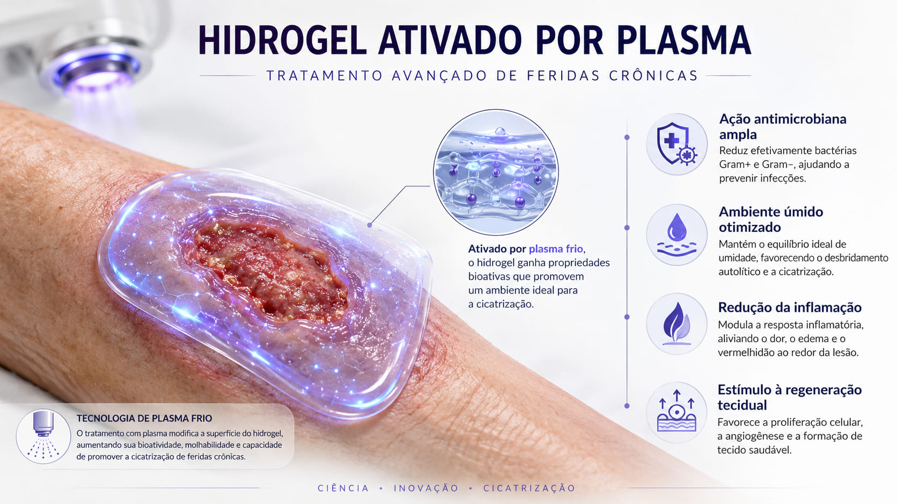
Hidrogéis Ativados por Plasma
Pesquisa Sheffield + Universidade do Sul da Austrália (2024) demonstrou eficácia contra patógenos resistentes em úlceras diabéticas.[6]
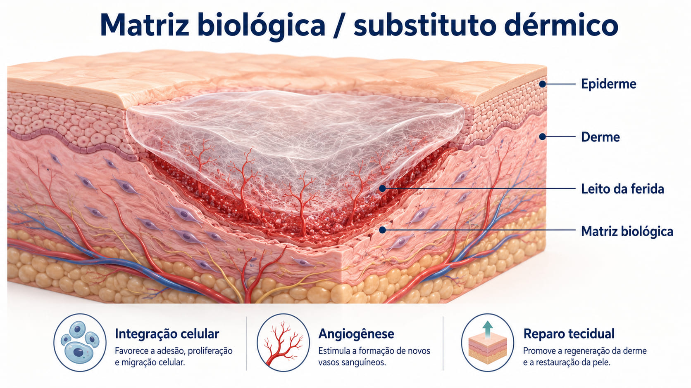
Matrizes Celulares e Tecido-Based
Substitutos dérmicos e aloenxertos (dHACM) estimulam regeneração. O Japão lançou o primeiro aloenxerto de membrana amniôtica desidratada aprovado no país.[9]
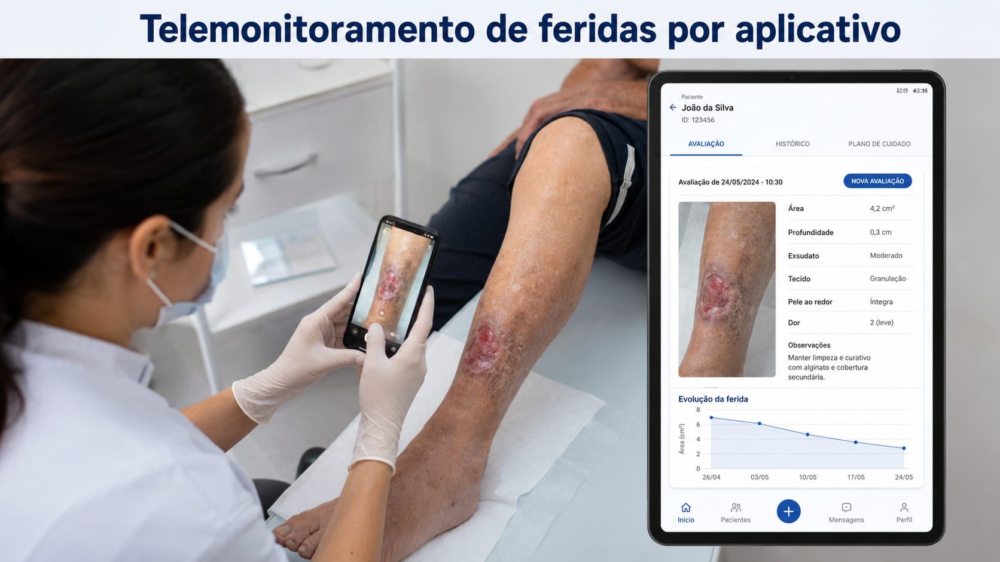
Telemonitoramento e IA
Aplicativos com fotografia padronizada + IA avaliam área, profundidade e coloração de feridas remotamente, eliminando deslocamentos desnecessários.[4]
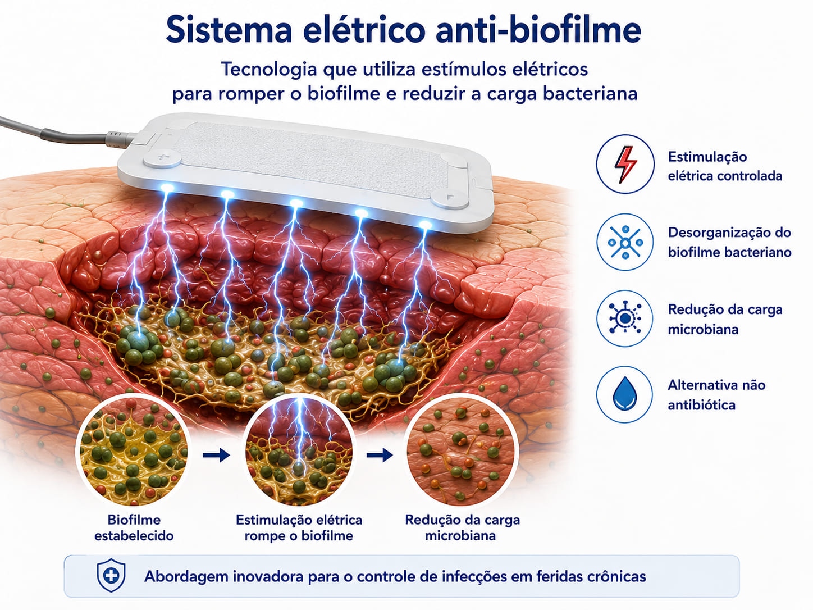
Sistemas Elétricos Anti-Biofilme
Estudo de 2023 (Advanced Materials) demonstrou sistema elétrico de alta eficácia contra infecções bacterianas em feridas crônicas — sem antibiótico.[12]
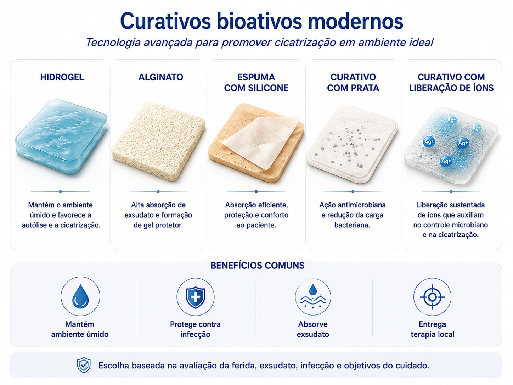
Hidrogéis, Alginatos e Bioativos
Curativos de nova geração controlam umidade, previnem infecção e entregam agentes terapêuticos diretamente no leito da ferida.[5]
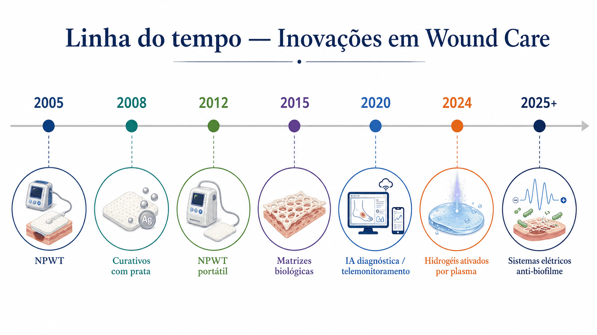
Benchmarks Internacionais
Quem está na frente — e o que eles fazem diferente
Os países de referência compartilham traços comuns: protocolos padronizados, equipes multiprofissionais dedicadas, sistemas de registro e cultura de prevenção.[7,8]
Reino Unido
NHS · NICEReferência em: protocolos clínicos nacionais e integração comunidade-hospital.[8]
- NICE publica guidelines para úlceras venosas, diabéticas e lesões por pressão
- Wound care nurses especialistas em todos os níveis do NHS
- Sistema nacional de dados epidemiológicos de feridas — pioneiro europeu
- Custo mapeado e rastreado: US$ 3 bilhões/ano
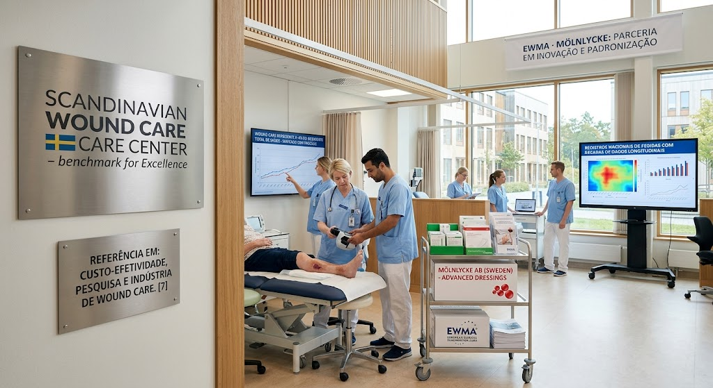
Escandinávia
EWMA · MölnlyckeReferência em: custo-efetividade, pesquisa e indústria de wound care.[7]
- Wound care representa 2–4% do orçamento total de saúde — mapeado com precisão
- Mölnlycke AB (Suécia) é líder mundial em curativos avançados
- EWMA lidera a padronização clínica europeia continental
- Registros nacionais de feridas com décadas de dados longitudinais
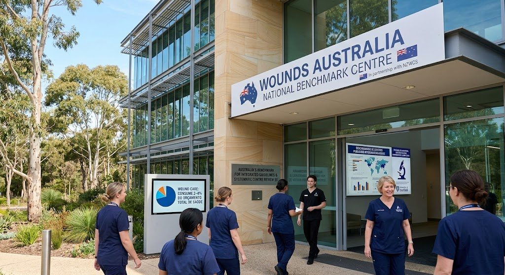
Austrália
Wounds AustraliaReferência em: guidelines integradas e benchmarking sistemático de centros.[8]
- Wounds Australia produz guidelines em parceria com a NZWCS
- Benchmarking de centros publicado internacionalmente
- Pesquisa colaborativa com Sheffield em hidrogéis de plasma (2024)
- Wound care consome 2–4% do orçamento total de saúde
Estados Unidos
CMS · FDAReferência em: aprovação de tecnologias, mercado e centros certificados.
- Maior mercado individual de wound care (dado de relatório setorial)[5]
- Centros certificados pelo CMS com protocolos padronizados
- FDA aprova continuamente novas tecnologias
- Desafio: desigualdade de acesso entre segurados e não segurados
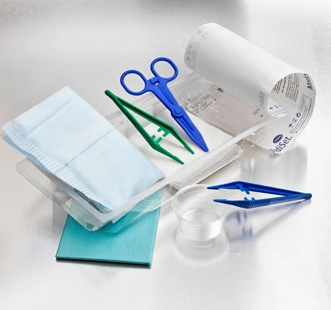
Alemanha
B. Braun · HartmannReferência em: fabricação de insumos e integração na Europa continental.
- Sede de B. Braun SE e PAUL HARTMANN AG — gigantes globais de wound care
- Reembolso público robusto para curativos avançados
- Pesquisa translacional ativa em biomateriais para feridas
- Participação central na padronização europeia via EWMA
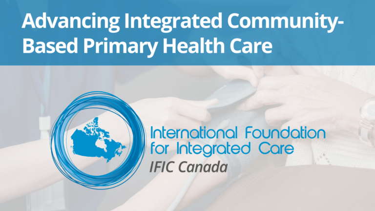
Canadá
Health Care TorontoReferência em: protocolos comunitários e colaboração interinstitucional.[8]
- Health Care Toronto publicou protocolos de referência para wound care comunitário
- Programas de awareness financiados pelo governo
- Sistema universal facilita padronização do acesso
- Modelo de gestão baseado em qualidade e indicadores publicados
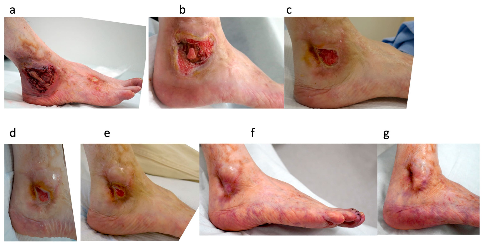
Japão
Inovação · RegulaçãoReferência em: aprovação de tecnologias inovadoras e envelhecimento ativo.[9]
- Lançou o primeiro aloenxerto dHACM aprovado no país
- Alta taxa de envelhecimento impulsiona investimento em lesão por pressão
- Mercado Ásia-Pacífico com maior CAGR projetado até 2030
- Agência regulatória rigorosa garante qualidade dos produtos

Dinamarca
Coloplast · ConvaTecReferência em: indústria de curativos e formação especializada global.[6]
- Sede do Coloplast Group — líder mundial em curativos especializados
- ConvaTec lançou em 2025 programas educacionais gratuitos com WOCN Society
- Modelo escandinavo de reembolso público de curativos avançados
- Alta proporção de enfermeiros estomaterapeutas por habitante
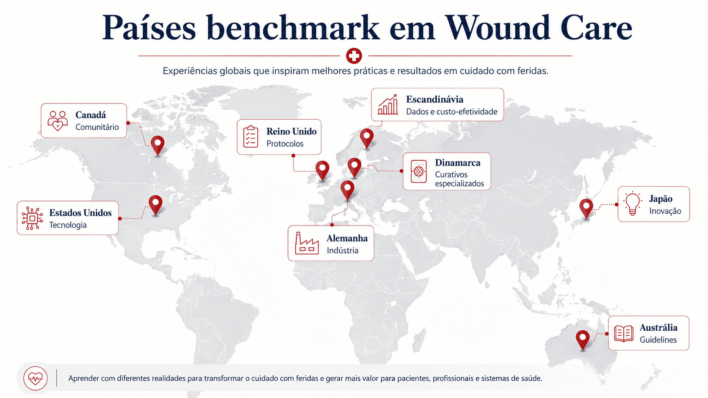
Organização dos Serviços
O que um serviço de wound care de referência precisa ter
A literatura internacional aponta atributos comuns entre centros de alta performance — independente do país ou sistema de saúde.[7,8]
Direção clínica comprometida
O centro precisa de um diretor com visão de gestão baseada em evidências, responsável por padronização, pesquisa e inovação contínua.[7]
Enfermeiro especialista como eixo central
O nurse practitioner/estomaterapeuta coordena o cuidado, articula os níveis de atenção e orienta cuidadores domiciliares.[8]
Protocolos padronizados
Vias clínicas validadas para triagem, classificação, tratamento e monitoramento — reduzindo variabilidade e garantindo qualidade.[7]
Sistema de registro e indicadores
Tempo de cicatrização, taxa de recidiva, custo por curativo e satisfação do paciente são os benchmarks universais. Sem registro, não há melhoria.[7]
Integração entre níveis de atenção
O fluxo primária → especialidade → home care deve ser fluido, com comunicação efetiva e responsabilidade compartilhada.[4]
Contexto Nacional
O Brasil diante do espelho: um problema grande, um sistema em construção
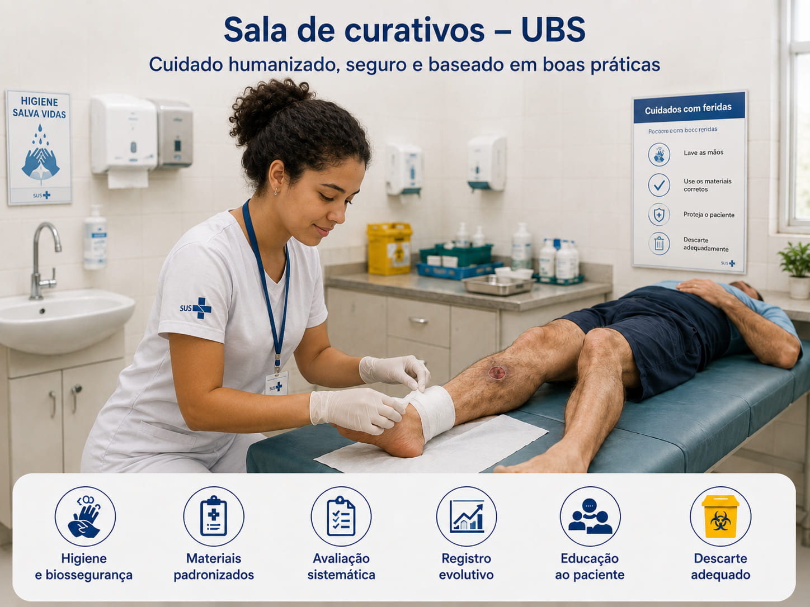
Síntese
O que fica na cabeça
Feridas crônicas não são um problema marginal. São uma epidemia silenciosa que cresce alimentada por diabetes, envelhecimento e desigualdade — e que ainda aguarda reconhecimento proporcional à sua magnitude.[2]
Os países que avançaram — Reino Unido, Escandinávia, Austrália — fizeram isso com dados, protocolos, profissionais especializados e integração de cuidado. Não há atalho tecnológico sem essa base estrutural.[7,8]
O Brasil tem os ingredientes para uma resposta à altura: sistema universal de saúde, profissionais motivados, pesquisa crescente e projetos inovadores como o telemonitoramento. O que falta é escala, integração e vontade política.[4]
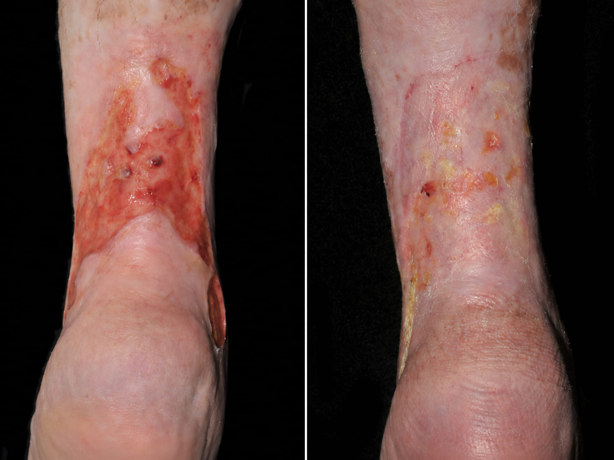
Perguntas de Reflexão
Questões para aprofundar o pensamento
Inspiradas no método socrático — não buscam respostas imediatas, mas provocam o exame daquilo que já sabemos, assumimos ou ainda não perguntamos sobre feridas crônicas.
"Se a prevalência global de feridas crônicas é de 1,67 por 1.000 habitantes, mas países pobres subnotificam — qual é o número que nunca vimos?"
Reflita: o que a ausência de dados diz sobre a posição que um sistema de saúde ocupa no espectro entre cuidado e abandono?
"Uma ferida crônica é uma doença — ou o sinal visível de uma doença que nunca foi tratada?"
Considere: tratar a ferida sem tratar o diabetes, a desnutrição ou o isolamento social é uma solução ou um adiamento?
"Por que pacientes com menos recursos financeiros têm mais feridas crônicas e menos acesso ao tratamento que cicatriza?"
O que isso revela sobre a relação entre pobreza, corpo e sistema de saúde? A ferida crônica é também uma ferida social?
"Se a falta de capacitação profissional é o gargalo principal — o que ensinamos nas faculdades de enfermagem e medicina sobre feridas crônicas?"
Investigue: qual é a carga horária dedicada ao cuidado de feridas na grade curricular do seu curso ou instituição?
"Curativos inteligentes e IA diagnóstica já existem. Por que ainda não chegaram ao sistema público de saúde na maioria dos países de renda média?"
A barreira é científica, financeira, regulatória ou política? Qual dessas barreiras você poderia ajudar a remover?
"Se revisão sistemática estima que 78% das feridas crônicas têm biofilme e a maioria dos protocolos ainda usa antibióticos sistêmicos — estamos tratando ou alimentando a resistência?"
Reflita sobre a relação entre prática clínica rotineira, evidência científica disponível e velocidade de adoção de novos tratamentos.
"O SUS trata feridas crônicas em três níveis — mas o paciente experimenta esse cuidado como um caminho contínuo ou como três sistemas desconectados?"
Do ponto de vista do paciente: o que é mais difícil — ter a ferida ou navegar pelo sistema para tratá-la?
"Os países de referência investiram décadas em dados, protocolos e formação. O que o Brasil precisa fazer nos próximos 10 anos para estar nessa lista?"
Se você tivesse poder de propor uma única política pública para feridas crônicas no Brasil, qual seria — e por quê?
"O telemonitoramento permite acompanhar feridas sem deslocamento — mas o que acontece com o paciente que não tem smartphone, internet ou habilidade digital?"
Como garantir que soluções digitais não criem uma nova camada de desigualdade dentro da já desigual atenção a feridas crônicas?
"Uma ferida crônica dói, isola, envergonha e restringe. O que o sistema de saúde faz pelo sofrimento que não aparece no prontuário?"
Qual é o espaço para a escuta, a dignidade e a presença em um cuidado que frequentemente se resume a trocar o curativo e ir embora?